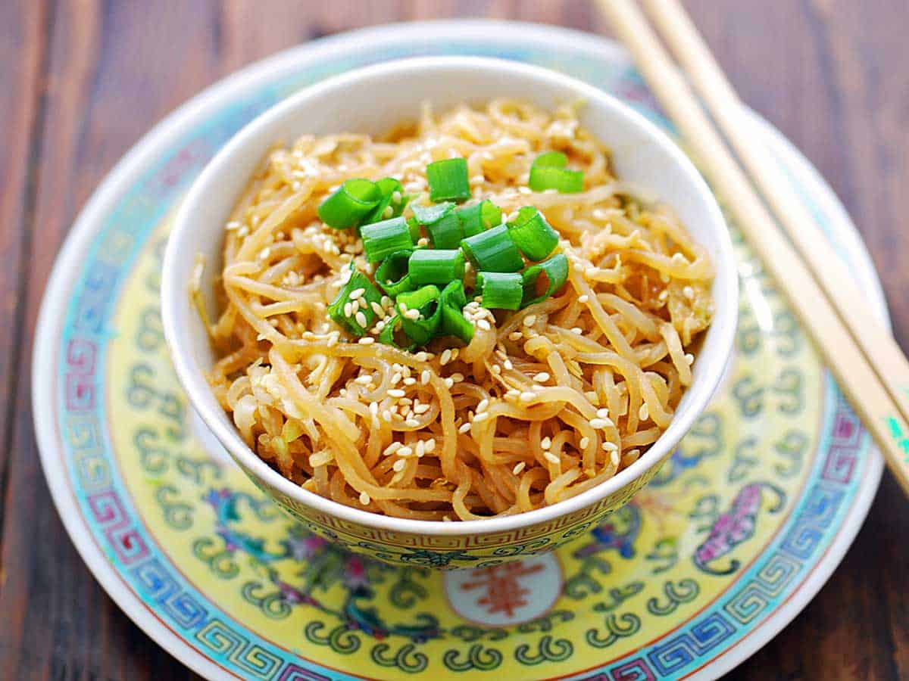

Shirataki Sesame Recipe

I love shirataki noodles. When prepared correctly,
they provide a wonderful keto, low-carb, and gluten-free
alternative to noodles and pasta. I normally prepare them
by boiling and dry-roasting them. Then I simply toss them
with butter, garlic, and Parmesan.
But a few months ago I decided to try using them in a
sesame noodles recipe. Success! These noodles are delicious,
flavorful, and super-filling. I've been making this recipe
regularly ever since. Today, I'm sharing it with you.
Ingredients List
- Shirataki Noodles, of course
- Tahini also labeled Sesame Paste
- Soy sauce, reduced sodium or regular to taste
- Rice Vinegar, or Apple Cider Vinegar for less
carbohydrates
- Red pepper flakes, LOTS
- Shredded cabbage
- Sesame oil, toasted sesame seeds, and chopped scallions
Steps to cook
- Rinse rhe noddles, boil them, then drain.
- Toast the noodles in a skillet to improve texture.
- Mix together sesame paste, soy sauce, vinegar, and pepper flakes
- Add noodles to a plate or bowl, then garnish with sesame oil, sesame seeds, and scallions.
- EAT